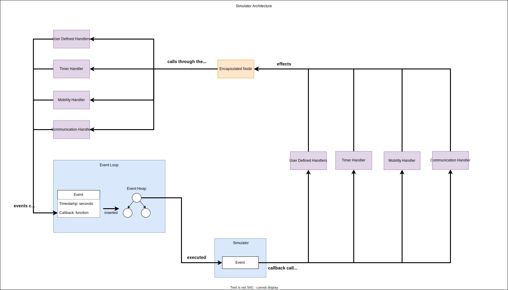

Introduction
The guides in this section will teach you to use the Python Simulator which is part of the GrADyS-SIM NextGen framewok. Simulations ran in this mode are said to be in prototype mode.
Why use the Python Simulator?
Use this simulator if you want quick iteration, easy setup, and a simple interface. This simulator is great for testing out new ideas and quickly prototyping new protocols. Don't let the word "prototype" fool you, this simulator is still very powerful and can be used to simulate any protocol that the other execution modes can.
How does it work?
The python simulator is an event-based simulator. This means that the simulator will simulate through the execution of events. Events can be any action that occurs in a specific timestamp. Events can represent messages being sent, node's positions being updated or anything else.
The event-loop is basically a heap of these events, where the top of the heap is the event that will be executed next, based on its timestamp. The simulator will execute the event by calling its callback method. For implementation details check out the Event section.
Every other component in the simulator is built on top of this event-based architecture. The simulator is very modular and extensible, so you can easily add new components to the simulator if you which to do it. The simulator is extended through the creation of handlers. Handlers are merely classes with a reference to the event-loop and nodes in the simulation. They use these references to implement some functionality. Check out the Handler section to learn more about handlers.
Protocols do not directly have access to any of the simulator's components. They indirectly interact with the simulator through the python encapsulator.
Important concepts
Before you start using the simulator you should understand the following concepts:
- Event-loop: The event-loop is the central component of the simulator. It is responsible for executing events in the correct order. Check out the Event section to learn more about events.
- Event: Events are the building blocks of the simulator. They represent actions that occur in a specific timestamp. Check out the Event section to learn more about events.
- Handler: Extensible interface to implement new functionality in the simulator. Check out the Handler section to learn more about handlers.
Architecture
